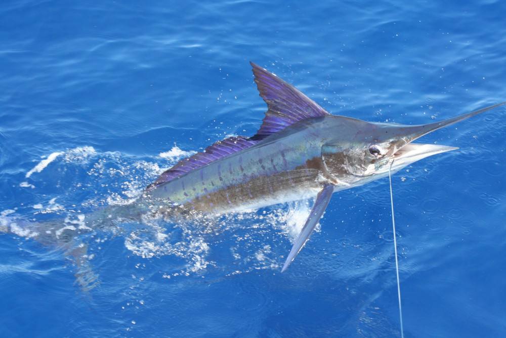

청세치는 390km/h의속도를 바탕으로 사냥을 합니다. 몸은 길며 측편되어 있다. 주둥이는 폭이 좁고 창 모양으로 나와 있다. 그 길이는 눈 뒤 머리 길이의 약 2배이다. 위턱 길이는 아래턱보다 2 배나 길다. 이는 작으나 일생 갖고 있다. 꼬리자루에는 2쌍의 세조줄 융기선이 있다. 체색 빛깔은 청흑색, 몸 옆구리 중앙은 연한 빛이고 옆에 약 17줄의 연한 청색 가로띠가 있다. 등지느러미는 흑색이고 가슴지느러미는 암흑색으로 변두리는 흑색이다. 분포 및 서식 대서양 해역에서는 아프리카 남부 해역에 국한되어 출현하고, 태평양 해역에서는 다른 다랑어류나 새치류와 마찬가지로 분포 범위가 넓으나, 인도양에서는 일반적으로 20 ~ 25℃의 수온대에서 생활한다. 태평양에서는 서부 해역보다 북반구의 동부 해역에 분포 밀도가 높다. 태평양 서부 해역에서는 이른 여름에, 중부태평양에서는 11 ~ 12월에 출현한다. 청새치는 다랑어류와 같이 군집을 이루어 생활하지 않으나, 산란기에는 작은 규모의 군집을 이룬다. 식성 표층에 서식하는 멸치, 정어리, 고등어, 꽁치, 날치, 전갱이 등 어류와 오징어류를 먹는다.